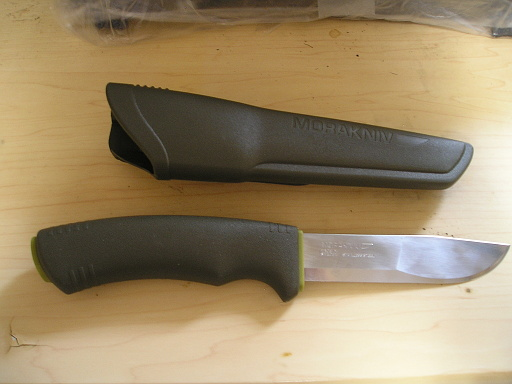
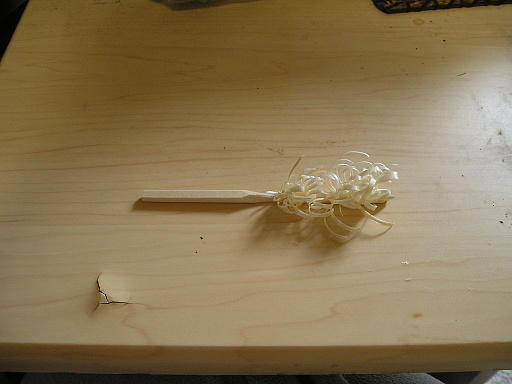
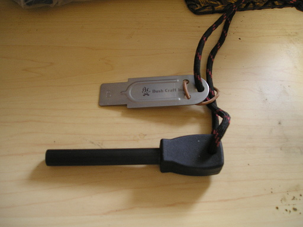
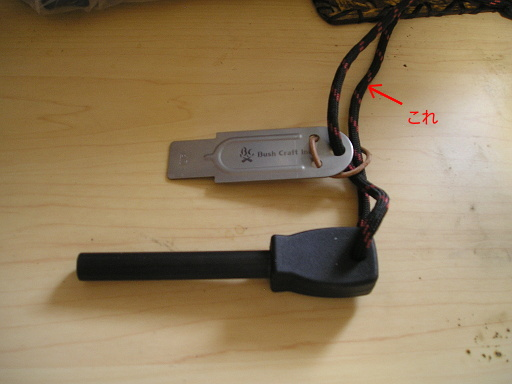
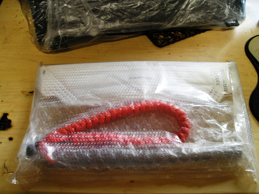
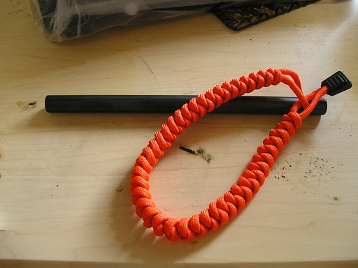
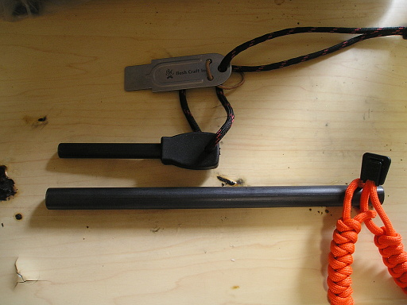
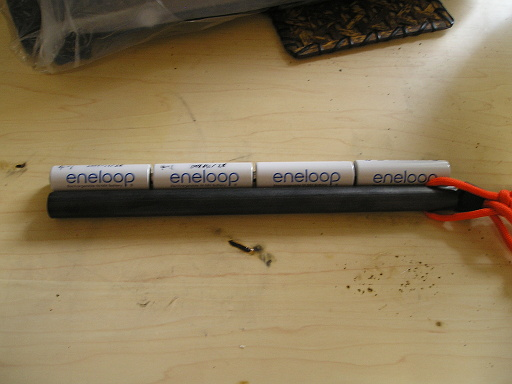

2016 年
04 月 28 日 ( 木 )
ナイフを買った
先日アウトドアで使うナイフを買いました。

MORA というメーカのブッシュクラフト・ナイフというナイフです。
なぜこんなナイフを買ったのかというと、薪を切ったり、削ったり、割ったりするのに使うためなのですが、主な理由はフェザースティックというものを作るためです。
フェザースティックとは下の写真のようなものです。

これは何に使うのかというと、もじゃもじゃとした部分、これをフェザーといいますが、ここに火をつけて焚き火などの火口や焚き付けに使うのです。写真では割り箸を加工していますが、実際のフェザースティックは指の太さくらいの木を使って作ります ( もっと太い木を使う人もいます )。
フェザースティックに火をつけるのにマッチやライターを使ってもいいのですが、ここはアウトドアらしくファイヤー・スチールを使って点火するとかっこいいかなぁ、と思ってファイヤー・スチールも買いました。

ファイヤー・スチールの詳しい使い方は他のサイトや YouTube にまかせますが、マグネシウム ( フェロセリウムという金属の場合もあります ) でできたロッドに、ストライカーという金属の板をこすりつけて火花を飛ばし、フェザースティックなどの火口を点火させます。
写真の製品は amazon のタイムセールで安くなっていたので、買いました。
箱の裏が説明書になっているのですが、そこに「火口がなくても安心」と書かれていました。なんでも 550 Fire Code という細引きの製品の中に火口になる特殊な糸がふくまれているのだそうです。
「ということは 550 Fire Code を買う必要があるんじゃね？なんで火口がなくても安心なの？」と思ったのですが、一晩経ってから、上のファイヤー・スチールに 550 Fire Code が含まれていることに気が付きました。
これです。

「なんだ。あるじゃん。説明書は正しかった」と思いましたが、長さが短くて火口として使うには不安があります。つまり火口として使うには足りないんじゃないかと。なので 550 Fire Code もそのうち買うかもしれません。
- Category :
- 日記
- アウトドア
なんか来た
なんか来ました。

開けてみました。

およ？

特大のメタルマッチでした。商品名はファイヤー・メーカー ( 仮の名称らしいです )。手首にかける細引きは、やっぱり 550 Fire Code です。
どれくらいでかいのかというと、普通の、とはいっても大きめの製品なのですが、ファイヤー・スチールと比べてみました。

大きさのイメージがわかりにくいかと思いますので、単３のエネループと比べてみました。

単３電池４個分の長さに、太さも単３電池くらいあります。まるで大砲です。でかい！！
これでキャンプとかでの火熾しも、はかどるんじゃないかと思います。
あとオマケに 3M Ｖフレックス防じんマスク をつけてくれました。使うことあるかな？

- Category :
- 日記
- アウトドア